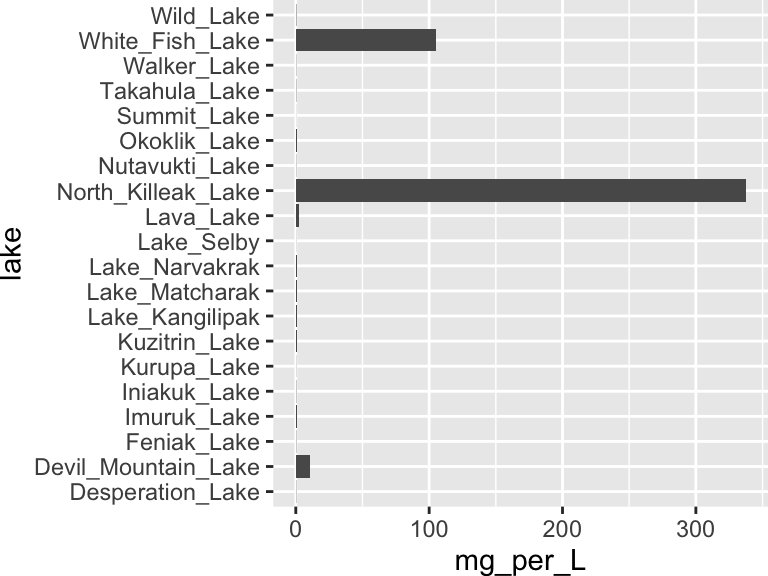

networks

A network is an interesting display because it can show both properties of an entity and also relationships between entities. A network does this using nodes, usually points, and edges, usually lines that connect the nodes. Typically, nodes are things and edges are connections between them, which mirrors the underlying data structure. However, there are two distinct sources of such a structure:
A similarity network is a structure we build. We start with a data matrix (samples for which we have measured many variables) and compute how similar every sample is to every other, then draw an edge wherever two samples are similar enough (see the bit about thresholds, below). Here, an edge means “these two samples resemble each other”, and we decide how much resemblance is required for two samples to be connected, usually using that threshold I mentioned.
An interaction network is a structure we are given. Here the data are already a list of connections that were observed in the world: journeys taken, messages sent, proteins that bind, and so forth. An edge means “this thing did something to, or with, this other thing”. There is no threshold to choose, because the edges are the observations.
That distinction is worth fixing firmly in mind now, because two networks built from these two different sources can look identical on the page but mean opposite things. A gene co-expression network is a similarity network: an edge says that the expression levels of two genes rise and fall together across the samples measured, which is something computed rather than observed. A protein-protein interaction network is an interaction network: an edge says that two proteins were observed to bind. These two distinct sorts of networks are easy to confuse, since both are drawn as dots and lines and both are about the molecules of the cell. But a well-connected gene in the first is simply a gene whose expression profile is unremarkable, while a well-connected protein in the second may be the most important molecule in the system.
distances and scaling
To build a network from a set of observations, we first need to calculate how similar each pair of samples are. For this, we use a distance matrix:

Figure 2.1: How a distance matrix is built. Each sample is described by several measured variables, and every pair of samples is compared across all of those variables to give a single number, the distance, that summarizes how different the two samples are. Small distances mean similar samples.
First, we need our data set in wide format:
alaska_lake_data %>%
select(-element_type) %>%
pivot_wider(names_from = "element", values_from = "mg_per_L") -> alaska_lake_data_wide
head(alaska_lake_data_wide)
## # A tibble: 6 × 15
## lake park water_temp pH C N P Cl
## <chr> <chr> <dbl> <dbl> <dbl> <dbl> <dbl> <dbl>
## 1 Devil_Mou… BELA 6.46 7.69 3.4 0.028 0 10.4
## 2 Imuruk_La… BELA 17.4 6.44 4.7 0.013 0 1.18
## 3 Kuzitrin_… BELA 8.06 7.45 2 0 0 0.67
## 4 Lava_Lake BELA 20.2 7.42 8.3 0.017 0.001 2.53
## 5 North_Kil… BELA 11.3 8.04 4.3 0.037 0.001 337.
## 6 White_Fis… BELA 12.0 7.82 12.3 0.034 0.006 105.
## # ℹ 7 more variables: S <dbl>, F <dbl>, Br <dbl>, Na <dbl>,
## # K <dbl>, Ca <dbl>, Mg <dbl>Now, we need a distance matrix. Here is the traditional way:
dist(alaska_lake_data_wide[,3:15])
## 1 2 3 4 5
## 2 17.249885
## 3 13.914769 9.825572
## 4 18.650639 12.114748 17.376585
## 5 363.367406 375.484304 376.096169 372.814170
## 6 107.196874 119.469450 120.216457 116.204115 257.046356
## 7 39.939919 43.719116 42.365857 34.754470 375.000861
## 8 19.404912 21.984690 20.063580 18.697259 373.762458
## 9 35.533288 39.789532 38.784007 30.645412 372.279208
## 10 18.962699 14.634495 15.666485 10.483673 375.971844
## 11 18.453129 11.246167 14.445096 6.035171 375.825483
## 12 15.859597 8.463470 6.549584 14.247034 408.973609
## 13 53.990906 57.852872 56.692667 47.946077 375.976344
## 14 27.647239 27.763703 27.745856 19.099653 375.370523
## 15 53.952032 58.544454 57.044065 50.265090 375.483212
## 16 13.653806 15.851229 7.656391 19.617519 375.983281
## 17 14.509806 16.700167 10.740051 19.120889 375.673721
## 18 13.153727 13.931840 8.987793 15.893494 375.157921
## 19 18.520826 10.826147 14.818691 4.351309 375.348981
## 20 13.122339 13.918487 9.649135 14.221515 374.915449
## 6 7 8 9 10
## 2
## 3
## 4
## 5
## 6
## 7 121.114036
## 8 117.766213 26.564153
## 9 117.707763 7.201256 22.418984
## 10 119.608791 30.092744 10.637359 26.116748
## 11 119.365204 33.019096 15.336409 29.255482 5.952777
## 12 130.491702 41.856664 17.229544 37.778483 11.140371
## 13 125.047466 18.551858 43.715031 22.853050 45.370561
## 14 119.711970 17.822205 17.140450 15.116676 15.261002
## 15 124.815436 19.456110 38.576517 21.589961 44.248959
## 16 120.008119 37.645002 16.021790 34.347377 15.155177
## 17 119.635012 35.256225 12.522921 32.181857 13.699739
## 18 118.629445 37.805337 17.533849 34.070348 14.570844
## 19 118.831349 33.976175 16.986590 30.206181 7.697126
## 20 118.308513 35.461496 15.850232 31.733081 12.479645
## 11 12 13 14 15
## 2
## 3
## 4
## 5
## 6
## 7
## 8
## 9
## 10
## 11
## 12 10.180989
## 13 46.940423 57.993866
## 14 16.757819 25.552154 30.739429
## 15 48.524147 57.622278 27.204181 35.158036
## 16 16.018137 9.916751 52.513357 25.306954 51.656812
## 17 15.475985 10.697363 51.133725 23.902339 48.735302
## 18 14.167245 10.455806 52.153491 25.115004 52.172107
## 19 2.178394 11.082962 47.508028 17.698579 49.659940
## 20 12.209922 9.846948 49.759392 22.485011 50.153277
## 16 17 18 19
## 2
## 3
## 4
## 5
## 6
## 7
## 8
## 9
## 10
## 11
## 12
## 13
## 14
## 15
## 16
## 17 5.535921
## 18 7.313364 9.643066
## 19 16.910716 16.591947 14.272415
## 20 7.593005 9.322022 2.664249 12.413960We can also get distances directly from runMatrixAnalysis(), this course’s matrix-analysis function, by specifying analysis = "dist". One argument matters here (well, and a few others, below): output_format = "long" asks for the distances as a long table, one row per pair of lakes, rather than as the compact triangle dist() printed above. The long shape is the one we want, because in a moment we are going to turn each of those rows into an edge.
alaska_dist_long <- runMatrixAnalysis(
data = alaska_lake_data_wide,
analysis = c("dist"),
output_format = "long",
scale_variance = FALSE,
columns_w_values_for_single_analyte = colnames(alaska_lake_data_wide)[3:15],
columns_w_sample_ID_info = c("lake", "park")
)
## Replacing NAs in your data with mean
head(alaska_dist_long)
## # A tibble: 6 × 7
## sample_unique_ID_sample_1 sample_unique_ID_samp…¹ distance
## <chr> <chr> <dbl>
## 1 Devil_Mountain_Lake_BELA Imuruk_Lake_BELA 17.2
## 2 Devil_Mountain_Lake_BELA Kuzitrin_Lake_BELA 13.9
## 3 Devil_Mountain_Lake_BELA Lava_Lake_BELA 18.7
## 4 Devil_Mountain_Lake_BELA North_Killeak_Lake_BELA 363.
## 5 Devil_Mountain_Lake_BELA White_Fish_Lake_BELA 107.
## 6 Devil_Mountain_Lake_BELA Iniakuk_Lake_GAAR 39.9
## # ℹ abbreviated name: ¹sample_unique_ID_sample_2
## # ℹ 4 more variables: lake_sample_1 <chr>,
## # park_sample_1 <chr>, lake_sample_2 <chr>,
## # park_sample_2 <chr>Let’s look at those distances. Why is North Killeak Lake so distant from everyone? Wasn’t that lake the one with such high chloride?
plot1 <- ggplot(
alaska_dist_long,
aes(x = sample_unique_ID_sample_1, y = sample_unique_ID_sample_2, fill = distance)
) +
geom_tile() +
theme(axis.text.x = element_text(angle = 45, hjust = 1))
plot1
Figure 2.2: Pairwise distances between Alaskan lakes, computed on unscaled data. A heat map in which each tile is one pair of lakes, with lake names on both axes and fill color showing the euclidean distance between that pair across all thirteen measured variables. Light tiles indicate dissimilar pairs. Because the variables were not scaled before the distances were computed, the pattern is dominated by the single most abundant analyte. Data are the ‘alaska_lake_data’ dataset used in UMD CHEM5725.
alaska_lake_data %>%
group_by(element) %>%
summarize(
mean_mg_per_L = mean(mg_per_L),
sd_mg_per_L = sd(mg_per_L)
)
## # A tibble: 11 × 3
## element mean_mg_per_L sd_mg_per_L
## <chr> <dbl> <dbl>
## 1 Br NA NA
## 2 C 4.66 2.84
## 3 Ca 18.2 16.4
## 4 Cl 23.1 77.5
## 5 F NA NA
## 6 K 1.01 1.87
## 7 Mg 7.12 8.62
## 8 N 0.0382 0.0567
## 9 Na 12.6 37.1
## 10 P 0.0006 0.00135
## 11 S 5.21 7.03
Figure 2.3: Chloride abundance across Alaskan lakes. A bar chart showing the concentration of chloride (in mg per L, x-axis) in each of twenty Alaskan lakes (lake names on y-axis). Each bar is a single measurement of chloride in a single lake. North Killeak Lake stands out, and because chloride is measured in much larger numbers than the other analytes, this one lake and this one analyte dominate the unscaled distances above. Data are from the ‘alaska_lake_data’ dataset used in UMD CHEM5725.
Yes, chloride is far more abundant than all the other elements, and North Killeak Lake has very high chloride. This means that the distances we computed above are essentially controlled by chloride, not by all elements equally. What if we want equal control? The fix is to scale each variable before computing distances: subtract the column’s mean and divide by its standard deviation. Every column then has a mean of 0 and a standard deviation of 1 (these are sometimes called z-scores), so a difference of one standard deviation counts the same whether it is in chloride, phosphorus, pH or water temperature. Base R’s scale() does it like this:
alaska_scaled <- scale(alaska_lake_data_wide[,3:15])
head(round(alaska_scaled, 2))
## water_temp pH C N P Cl S F
## [1,] -0.87 1.32 -0.44 -0.18 -0.44 -0.16 -0.65 0.80
## [2,] 1.29 -1.41 0.02 -0.44 -0.44 -0.28 -0.71 0.06
## [3,] -0.55 0.79 -0.93 -0.67 -0.44 -0.29 -0.70 -0.31
## [4,] 1.85 0.73 1.28 -0.37 0.30 -0.27 -0.66 0.80
## [5,] 0.10 2.08 -0.12 -0.02 0.30 4.05 -0.74 3.38
## [6,] 0.24 1.60 2.69 -0.07 3.99 1.06 -0.72 1.16
## Br Na K Ca Mg
## [1,] -0.22 -0.10 0.10 -0.76 -0.36
## [2,] -0.30 -0.30 -0.37 -1.05 -0.73
## [3,] -0.30 -0.31 -0.44 -1.00 -0.80
## [4,] -0.26 -0.26 -0.24 -0.39 -0.50
## [5,] 3.94 4.03 3.90 0.71 3.55
## [6,] 1.00 1.12 1.32 0.03 1.05We can do that directly in runMatrixAnalysis(), which saves a bit of time, using scale_variance (see below). Importantly, note that scaling is a choice, not a requirement. If every column is in the same units and the large values genuinely matter more, then leaving the data unscaled is a defensible choice. But whenever the columns are in different units, scale first.
runMatrixAnalysis(
data = alaska_lake_data_wide,
analysis = c("dist"),
output_format = "long",
scale_variance = TRUE,
columns_w_values_for_single_analyte = colnames(alaska_lake_data_wide)[3:15],
columns_w_sample_ID_info = c("lake", "park")
) %>% ggplot(
aes(x = sample_unique_ID_sample_1, y = sample_unique_ID_sample_2, fill = distance)
) +
geom_tile() +
theme(axis.text.x = element_text(angle = 45, hjust = 1)) -> plot2
## Replacing NAs in your data with mean
plot_grid(plot1, plot2, ncol = 1, labels = c("A", "B"))![The effect of scaling on a distance matrix. Two heat maps of the same twenty Alaskan lakes, with lake names on both axes and fill color showing the distance between each pair. A) Distances computed on the raw measurements, which are controlled almost entirely by chloride because chloride is reported in far larger numbers than the other analytes. B) Distances computed after every variable was centered and scaled to unit variance, so that a one-standard-deviation difference counts the same in every analyte. Data are from the 'alaska_lake_data' dataset used in UMD CHEM5725.](index_files/figure-html/unnamed-chunk-246-1.png)
Figure 2.4: The effect of scaling on a distance matrix. Two heat maps of the same twenty Alaskan lakes, with lake names on both axes and fill color showing the distance between each pair. A) Distances computed on the raw measurements, which are controlled almost entirely by chloride because chloride is reported in far larger numbers than the other analytes. B) Distances computed after every variable was centered and scaled to unit variance, so that a one-standard-deviation difference counts the same in every analyte. Data are from the ‘alaska_lake_data’ dataset used in UMD CHEM5725.
similarity networks
Once we have a distance matrix (scaled or unscaled), we can build networks. However, networks are built from an edge list: a table that lists one row per connection in the network. So, we need to turn the distances into rows of from, to, and weight. Fortunately, our long-style distance matrix makes this easy. There is just one trick: distance and similarity are the opposite of one another. A small distance means two samples are alike. But an edge weight is drawn thick when it is large. Feeding raw distance in as the edge weight draws the most dissimilar pairs as the most strongly connected: rarely what is intended. That is what similarity = 1 / (1 + distance) * 100 is for: it inverts distance into similarity. Whenever a network is built from distances, it is worth stopping to check which direction the metric runs in.
The similarity function above has a few parts that are perhaps not immediately obvious. Think about it like this: distance ranges, conceivably, from 0 to infinity. We would like similarity values derived from those distances that range from 0 to 100 (0% similar to 100% similar). If a distance is zero (100% similarity), then in our formula we get (1/(1+0)100) = 100. If distance is really large, say, 10000, then the similarity is small (1/(1+10000)100) = 0.01% similar. Minor notes: (i) adding the +1 means a distance of zero (identical items) is allowed, and (ii) if the distances are all very large or very small relative to 1, a scale factor can be added: 1 / (1 + d/k), where k is a “typical” distance to be mapped to 50%.
runMatrixAnalysis(
data = alaska_lake_data_wide,
analysis = c("dist"),
output_format = "long",
scale_variance = TRUE,
columns_w_values_for_single_analyte = colnames(alaska_lake_data_wide)[3:15],
columns_w_sample_ID_info = c("lake", "park")
) -> alaska_dist_long
## Replacing NAs in your data with mean
alaska_edges <- alaska_dist_long %>%
filter(distance > 0) %>%
mutate(similarity = 1 / (1 + distance) * 100) %>%
select(lake_sample_1, lake_sample_2, similarity)
alaska_edges
## # A tibble: 380 × 3
## lake_sample_1 lake_sample_2 similarity
## <chr> <chr> <dbl>
## 1 Devil_Mountain_Lake Imuruk_Lake 21.4
## 2 Devil_Mountain_Lake Kuzitrin_Lake 37.5
## 3 Devil_Mountain_Lake Lava_Lake 22.7
## 4 Devil_Mountain_Lake North_Killeak_Lake 9.34
## 5 Devil_Mountain_Lake White_Fish_Lake 13.7
## 6 Devil_Mountain_Lake Iniakuk_Lake 19.5
## 7 Devil_Mountain_Lake Kurupa_Lake 25.4
## 8 Devil_Mountain_Lake Lake_Matcharak 21.5
## 9 Devil_Mountain_Lake Lake_Selby 23.7
## 10 Devil_Mountain_Lake Nutavukti_Lake 22.5
## # ℹ 370 more rowsWith the edgelist in hand, we can build a network easily with buildNetwork():
net <- buildNetwork(
edgelist = alaska_edges,
node_attributes = select(alaska_lake_data_wide, lake, park)
)
## buildNetwork: every repeated node pair (A->B and B->A) had matching edge attributes, so the network is treated as undirected and 380 edges were collapsed to 190. Set directed = TRUE to keep both directions.
head(net$nodes)
## x y
## Devil_Mountain_Lake 0.27680568 0.6307944
## Imuruk_Lake 0.27948381 0.0000000
## Kuzitrin_Lake 0.05977573 0.5360999
## Lava_Lake 0.00000000 0.3553212
## North_Killeak_Lake 1.00000000 0.4350483
## White_Fish_Lake 0.47482513 1.0000000
## node_name park
## Devil_Mountain_Lake Devil_Mountain_Lake BELA
## Imuruk_Lake Imuruk_Lake BELA
## Kuzitrin_Lake Kuzitrin_Lake BELA
## Lava_Lake Lava_Lake BELA
## North_Killeak_Lake North_Killeak_Lake BELA
## White_Fish_Lake White_Fish_Lake BELA
head(net$edges)
## x y start_node xend
## 1 0.2768057 0.6307944 Devil_Mountain_Lake 0.27948381
## 2 0.2768057 0.6307944 Devil_Mountain_Lake 0.05977573
## 3 0.2768057 0.6307944 Devil_Mountain_Lake 0.00000000
## 4 0.2768057 0.6307944 Devil_Mountain_Lake 1.00000000
## 5 0.2768057 0.6307944 Devil_Mountain_Lake 0.47482513
## 6 0.2768057 0.6307944 Devil_Mountain_Lake 0.72222396
## yend end_node similarity
## 1 0.0000000 Imuruk_Lake 21.403954
## 2 0.5360999 Kuzitrin_Lake 37.549555
## 3 0.3553212 Lava_Lake 22.717833
## 4 0.4350483 North_Killeak_Lake 9.342952
## 5 1.0000000 White_Fish_Lake 13.719374
## 6 0.5350723 Iniakuk_Lake 19.539621These outputs are easy to plot with! buildNetwork() returns node and edge coordinates from a force-directed layout, ready for ggplot. Edges are drawn with geom_segment(), nodes with geom_point(). For buildNetwork(), the edgelist should have node names in columns 1 and 2 (lake_sample_1, lake_sample_2 here). If a third column is present it is treated as the edge weight, and any additional columns are carried through as edge attributes. node_attributes is joined onto the nodes so they can be colored by something already known about the samples.
ggplot() +
geom_segment(
data = net$edges,
aes(
x = x, y = y, xend = xend, yend = yend,
linewidth = similarity,
alpha = similarity
),
color = "grey40"
) +
geom_point(
data = net$nodes,
aes(x = x, y = y, fill = park),
shape = 21, size = 3.2, color = "black", stroke = 0.2
) +
scale_linewidth_continuous(range = c(0.2, 1.4)) +
scale_alpha_continuous(range = c(0.15, 0.8)) +
guides(alpha = "none") +
theme_void() +
theme(legend.position = "bottom")![A similarity network of Alaskan lakes drawn with no threshold. Each point is one of twenty lakes, positioned by a force-directed layout, with fill color showing which of three national parks the lake sits in. Each line is an edge joining a pair of lakes, with line width and opacity both encoding similarity, calculated as 1 / (1 + scaled euclidean distance). Because no threshold has been applied, every pair of lakes is joined, which produces the 'hairball' seen here. Node positions carry no information. Data are from the 'alaska_lake_data' dataset used in UMD CHEM5725.](index_files/figure-html/unnamed-chunk-249-1.png)
Figure 2.5: A similarity network of Alaskan lakes drawn with no threshold. Each point is one of twenty lakes, positioned by a force-directed layout, with fill color showing which of three national parks the lake sits in. Each line is an edge joining a pair of lakes, with line width and opacity both encoding similarity, calculated as 1 / (1 + scaled euclidean distance). Because no threshold has been applied, every pair of lakes is joined, which produces the ‘hairball’ seen here. Node positions carry no information. Data are from the ‘alaska_lake_data’ dataset used in UMD CHEM5725.
Well, that is a network, but all points are connected, making it a hairball. What we need to do is define, using a threshold, which connections are sufficiently strong to constitute a connection between the two nodes:
net_10 <- buildNetwork(
edgelist = filter(alaska_edges, similarity > 10),
node_attributes = select(alaska_lake_data_wide, lake, park)
)
## buildNetwork: every repeated node pair (A->B and B->A) had matching edge attributes, so the network is treated as undirected and 344 edges were collapsed to 172. Set directed = TRUE to keep both directions.
net_20 <- buildNetwork(
edgelist = filter(alaska_edges, similarity > 20),
node_attributes = select(alaska_lake_data_wide, lake, park)
)
## buildNetwork: every repeated node pair (A->B and B->A) had matching edge attributes, so the network is treated as undirected and 222 edges were collapsed to 111. Set directed = TRUE to keep both directions.
net_25 <- buildNetwork(
edgelist = filter(alaska_edges, similarity > 25),
node_attributes = select(alaska_lake_data_wide, lake, park)
)
## buildNetwork: every repeated node pair (A->B and B->A) had matching edge attributes, so the network is treated as undirected and 120 edges were collapsed to 60. Set directed = TRUE to keep both directions.
net_30 <- buildNetwork(
edgelist = filter(alaska_edges, similarity > 30),
node_attributes = select(alaska_lake_data_wide, lake, park)
)
## buildNetwork: every repeated node pair (A->B and B->A) had matching edge attributes, so the network is treated as undirected and 36 edges were collapsed to 18. Set directed = TRUE to keep both directions.
net_10$nodes$threshold <- 10
net_10$edges$threshold <- 10
net_20$nodes$threshold <- 20
net_20$edges$threshold <- 20
net_25$nodes$threshold <- 25
net_25$edges$threshold <- 25
net_30$nodes$threshold <- 30
net_30$edges$threshold <- 30
net$nodes <- rbind(net_10$nodes, net_20$nodes, net_25$nodes, net_30$nodes)
net$edges <- rbind(net_10$edges, net_20$edges, net_25$edges, net_30$edges)
ggplot() +
geom_segment(
data = net$edges,
aes(
x = x, y = y, xend = xend, yend = yend,
linewidth = similarity,
alpha = similarity
),
color = "grey40"
) +
geom_point(
data = net$nodes,
aes(x = x, y = y, fill = park),
shape = 21, size = 3.2, color = "black", stroke = 0.2
) +
facet_grid(.~threshold) +
scale_linewidth_continuous(range = c(0.2, 1.4)) +
scale_alpha_continuous(range = c(0.15, 0.8)) +
guides(alpha = "none") +
theme_void() +
theme(legend.position = "bottom")![The same similarity network drawn at four similarity thresholds. Each panel shows the twenty Alaskan lakes as points, colored by park, joined by an edge only where the similarity between that pair exceeds the threshold given above the panel (10, 20, 25 and 30, left to right). Line width and opacity encode similarity. Raising the threshold removes weak edges and eventually breaks the network into separate pieces, so the structure you see is a consequence of a chosen threshold rather than a property of the lakes. Data are from the 'alaska_lake_data' dataset used in UMD CHEM5725.](index_files/figure-html/unnamed-chunk-251-1.png)
Figure 2.6: The same similarity network drawn at four similarity thresholds. Each panel shows the twenty Alaskan lakes as points, colored by park, joined by an edge only where the similarity between that pair exceeds the threshold given above the panel (10, 20, 25 and 30, left to right). Line width and opacity encode similarity. Raising the threshold removes weak edges and eventually breaks the network into separate pieces, so the structure you see is a consequence of a chosen threshold rather than a property of the lakes. Data are from the ‘alaska_lake_data’ dataset used in UMD CHEM5725.
Minor note: a long-style distance matrix lists every pair twice, once as A to B and once as B to A, with the same distance both times. buildNetwork() spots this, keeps one edge per pair, and prints a message reporting that it has treated the network as undirected. That is the right thing to do here, and we will come back to why — and to when it is the wrong thing to do — under “directed and undirected”, below.
The nodes are whatever is in the rows. Everything above put one lake per row and thirteen analytes per column, so the network joins lakes. Nothing about the method requires that, and often it is the measured variables we want a network of rather than the samples: which analytes track each other across the lakes, which genes are switched on together across a set of samples. To get that network, put the variables in the rows instead — pivot on the sample name rather than on the variable name — and the same pipeline returns edges between variables.
Two things change when you do, and both will bite. First, scale_variance scales columns, and the columns are now the samples, so it no longer puts the variables on an equal footing — which is usually exactly what you wanted it for. Scale each variable before pivoting instead, and then ask for scale_variance = FALSE. Second, with a single columns_w_sample_ID_info, the long output names its two node columns sample_unique_ID_sample_1 and sample_unique_ID_sample_2 rather than after your ID column, so rename them if you want the edge list to read.
alaska_lake_data %>%
select(lake, element, mg_per_L) %>%
group_by(element) %>%
mutate(mg_per_L = as.numeric(scale(mg_per_L))) %>%
ungroup() %>%
pivot_wider(names_from = "lake", values_from = "mg_per_L") -> elements_wide
element_edges <- runMatrixAnalysis(
data = elements_wide,
analysis = "dist",
output_format = "long",
scale_variance = FALSE,
columns_w_values_for_single_analyte = colnames(elements_wide)[2:21],
columns_w_sample_ID_info = c("element")
) %>%
# dplyr:: is required here, not decoration: S4Vectors (pulled in by the Bioconductor
# packages phylochemistry attaches) exports its own rename(), it wins on the search
# path, and it evaluates its arguments — so a bare rename() fails with
# "object 'sample_unique_ID_sample_1' not found" rather than renaming anything.
dplyr::rename(element_1 = sample_unique_ID_sample_1, element_2 = sample_unique_ID_sample_2) %>%
mutate(similarity = 1 / (1 + distance) * 100)
## Replacing NAs in your data with mean
head(arrange(element_edges, desc(similarity)), 4)
## # A tibble: 4 × 4
## element_1 element_2 distance similarity
## <chr> <chr> <dbl> <dbl>
## 1 Cl Na 0.168 85.6
## 2 Na Cl 0.168 85.6
## 3 Cl Br 0.201 83.3
## 4 Br Cl 0.201 83.3The two analytes that track each other most closely across the twenty lakes are chloride and sodium, with chloride and bromide just behind — which is a reassuring thing to find, because it is salt, and it is a result about the analytes that the lake network could not have told us.
interaction networks
The networks in the previous section were built from properties of the subjects we measured (lake pH, water temp, etcetera). But what if each observation itself is an edge: an origin-and-destination table of journeys, a ledger of letters sent between cities, a record of which proteins were observed to bind which, and so forth. In such data sets, the edge list is the raw data, instead of something we compute from a data matrix. Accordingly, we do not need to choose whether or not to scale, nor to pick a threshold: there is nothing to pick, because the edges are the observations. Three things become possible here that were not possible in a similarity network:
Direction. An observed edge often has a direction: A sent to B is not the same fact as B sent to A. A similarity network can never show this, because distance is symmetric — if lake A is close to lake B, then lake B is exactly that close to lake A, always. And when a network is directed, the asymmetry is often the finding: a node that sends far more than it receives is a result in and of itself.
Weight as a count. An edge can document how many times the thing happened, which is a real quantity in the world, not a transformation of a distance.
Structure. Because the edges are facts rather than resemblances, questions about the shape of the graph become meaningful: how many separate pieces are there, which nodes hold them together, and what breaks if a node is removed. In a similarity network every node is joined to every other until we impose a threshold, as we saw above, so the shape of that graph is mostly a consequence of the number we picked. In an interaction network, the shape is a property of the world.
On the operational end of things, buildNetwork() already accepts a bare two-column edge list, with weights optional, so no new tooling is needed for these sorts of data sets. Let’s look at an example. We will use two data sets that come with phylochemistry: passenger_flows, a ledger of how many passengers flew between pairs of US airports, and us_airports, which tells us something about each airport.
us_airports
## # A tibble: 29 × 7
## airport name city state region latitude longitude
## <chr> <chr> <chr> <chr> <chr> <dbl> <dbl>
## 1 ATL Hartsfield… Atla… GA lower… 33.6 -84.4
## 2 ORD Chicago O'… Chic… IL lower… 42.0 -87.9
## 3 DFW Dallas/For… Dall… TX lower… 32.9 -97.0
## 4 DEN Denver Int… Denv… CO lower… 39.9 -105.
## 5 LAX Los Angele… Los … CA lower… 33.9 -118.
## 6 JFK John F. Ke… New … NY lower… 40.6 -73.8
## 7 SFO San Franci… San … CA lower… 37.6 -122.
## 8 SEA Seattle-Ta… Seat… WA lower… 47.5 -122.
## 9 PDX Portland I… Port… OR lower… 45.6 -123.
## 10 MSP Minneapoli… Minn… MN lower… 44.9 -93.2
## # ℹ 19 more rows
passenger_flows
## # A tibble: 192 × 3
## origin destination passengers
## <chr> <chr> <dbl>
## 1 ANC BET 9290
## 2 ANC FAI 19360
## 3 ANC JNU 14650
## 4 ANC OME 5140
## 5 ANC OTZ 4020
## 6 ANC SIT 5810
## 7 ATL BOS 69040
## 8 ATL CLT 73400
## 9 ATL DEN 58310
## 10 ATL DFW 75820
## # ℹ 182 more rowsNote that passenger_flows is already an edge list: two columns naming the nodes, and a third carrying the weight. That is all buildNetwork() needs. Because each row is a directed fact (passengers who flew from the origin to the destination), we pass directed = TRUE.
air_net <- buildNetwork(
edgelist = passenger_flows,
node_attributes = us_airports,
directed = TRUE
)
ggplot() +
geom_segment(
data = air_net$edges,
aes(
x = x, y = y, xend = xend, yend = yend,
linewidth = passengers,
alpha = passengers
),
color = "grey40"
) +
geom_point(
data = air_net$nodes,
aes(x = x, y = y),
shape = 21, size = 3.2, color = "black", stroke = 0.2
) +
geom_text_repel(
data = air_net$nodes,
aes(x = x, y = y, label = paste(city, state)),
max.overlaps = Inf, size = 3
) +
scale_linewidth_continuous(range = c(0.2, 1.4)) +
scale_alpha_continuous(range = c(0.15, 0.8)) +
guides(alpha = "none") +
theme_void() +
theme(legend.position = "bottom")![An interaction network of US passenger air travel. Each point is one of twenty-nine airports, labeled with its city and state and positioned by a force-directed layout. Each line is a route on which passengers were recorded flying, with line width and opacity both encoding the number of passengers. Node positions carry no geographic information; the only content of the figure is which airports are joined to which. Data are the simulated 'passenger_flows' and 'us_airports' datasets used in UMD CHEM5725.](index_files/figure-html/unnamed-chunk-254-1.png)
Figure 2.7: An interaction network of US passenger air travel. Each point is one of twenty-nine airports, labeled with its city and state and positioned by a force-directed layout. Each line is a route on which passengers were recorded flying, with line width and opacity both encoding the number of passengers. Node positions carry no geographic information; the only content of the figure is which airports are joined to which. Data are the simulated ‘passenger_flows’ and ‘us_airports’ datasets used in UMD CHEM5725.
interpreting networks
directed and undirected
An edge either has a direction or it does not, and the case in which a given analysis lies is a property of the relationship measured in the data.
Some relationships are mutual. Two proteins bind each other. Two lakes resemble each other. Two towers are within sight of each other. There is no “from” and no “to” here; the edge is simply a pair, and we call such a network undirected and draw it with plain lines. Every similarity network is undirected, for the reason given above: distance is symmetric, so there is nothing else it could be.
Other relationships are oriented. A passenger flies from Seattle to Ketchikan. One protein phosphorylates another. Here “A to B” and “B to A” are two different facts, and they can carry different numbers. We call such a network directed and draw it with arrows. Only an interaction network can be directed.
One case in between that can cause confusion: sometimes a directed network turns out to be almost perfectly balanced: roughly as many passengers fly Seattle to Ketchikan as fly Ketchikan to Seattle. It is tempting to call that network undirected and collapse the two rows into one. Resist. The network is still directed, and the balance is a result — one that would be destroyed the moment it is collapsed, because afterwards the analyst can no longer ask which airports send more than they receive. Undirected means direction was never defined. Balanced means direction was defined, and came out even.
This is also why buildNetwork() cannot make the call about directed versus undirected for a user. When it sees “A to B” and “B to A” carrying identical values, it assumes the network is undirected, keeps one edge per pair, and prints a message saying so. That is the right guess for a long-style distance matrix, where the pair is simply listed twice, and the wrong guess for a flight ledger that happens to be balanced. The numbers look the same in both cases; only the analyst knows which one is in hand. Say so with directed = TRUE or directed = FALSE.
node summaries
The simplest node-level summary is degree — how many other nodes a node connects to. For an edge list, this is just counting how many times each node is listed, which is group_by() and summarize() from the wrangling chapter applied to a network. In a directed network, degree splits in two: out-degree (how many places can be reached from here) and in-degree (how many places reach here), so we count each column separately and join the results. Note the airport = origin inside group_by(): that names the grouping column as it is created, which saves renaming it afterwards and means both tables come out with a column of the same name to join on.
passenger_flows %>%
group_by(airport = origin) %>%
summarize(out_degree = n()) -> out_degree
passenger_flows %>%
group_by(airport = destination) %>%
summarize(in_degree = n()) -> in_degree
full_join(out_degree, in_degree, by = "airport") %>%
arrange(desc(out_degree))
## # A tibble: 29 × 3
## airport out_degree in_degree
## <chr> <int> <int>
## 1 ATL 15 15
## 2 LAX 14 14
## 3 ORD 14 14
## 4 SEA 11 11
## 5 SFO 11 11
## 6 DEN 10 10
## 7 DFW 9 9
## 8 HNL 9 9
## 9 LAS 8 8
## 10 PHX 8 8
## # ℹ 19 more rowsIf the edges carry counts, we can also ask for strength, or total volume: the same grouping, but summing the passengers instead of counting the rows. Notice that degree and strength do not have to agree, and that neither of them is the same question as “which airport matters most”. That last one turns out to need a different approach altogether (see below).
passenger_flows %>%
group_by(airport = origin) %>%
summarize(passengers_out = sum(passengers)) -> passengers_out
passenger_flows %>%
group_by(airport = destination) %>%
summarize(passengers_in = sum(passengers)) -> passengers_in
full_join(passengers_out, passengers_in, by = "airport") %>%
mutate(total_passengers = passengers_out + passengers_in) %>%
arrange(desc(total_passengers))
## # A tibble: 29 × 4
## airport passengers_out passengers_in total_passengers
## <chr> <dbl> <dbl> <dbl>
## 1 ATL 949320 948300 1897620
## 2 LAX 720780 669520 1390300
## 3 ORD 680120 664860 1344980
## 4 SFO 493050 476020 969070
## 5 DEN 466700 457170 923870
## 6 DFW 400880 404790 805670
## 7 JFK 386610 382780 769390
## 8 HNL 338940 398300 737240
## 9 LAS 355340 346350 701690
## 10 SEA 341220 332130 673350
## # ℹ 19 more rowsnode removal
Degree and strength both answer “how much?”, but neither answers “does this node matter?”. The cheapest way to ask the second question is to delete a node and see what happens to everything else. Deleting a node just means dropping every edge that touches it, which is a single filter(). Let’s do it twice: once for the busiest airport in the network, and once for one of the lowest-traffic airports.
passenger_flows %>%
filter(origin != "ATL", destination != "ATL") -> flows_no_atlanta
passenger_flows %>%
filter(origin != "KTN", destination != "KTN") -> flows_no_ketchikanNow we rebuild and plot each one, in exactly the same way we compared thresholds earlier:
net_no_atlanta <- buildNetwork(
edgelist = flows_no_atlanta,
node_attributes = us_airports,
directed = TRUE
)
net_no_ketchikan <- buildNetwork(
edgelist = flows_no_ketchikan,
node_attributes = us_airports,
directed = TRUE
)
net_no_atlanta$nodes$removed <- "Atlanta removed (busiest)"
net_no_atlanta$edges$removed <- "Atlanta removed (busiest)"
net_no_ketchikan$nodes$removed <- "Ketchikan removed (27th of 29)"
net_no_ketchikan$edges$removed <- "Ketchikan removed (27th of 29)"
removal_nodes <- rbind(net_no_atlanta$nodes, net_no_ketchikan$nodes)
removal_edges <- rbind(net_no_atlanta$edges, net_no_ketchikan$edges)
ggplot() +
geom_segment(
data = removal_edges,
aes(
x = x, y = y, xend = xend, yend = yend,
linewidth = passengers,
alpha = passengers
),
color = "grey40"
) +
geom_point(
data = removal_nodes,
aes(x = x, y = y),
shape = 21, size = 3.2, color = "black", stroke = 0.2
) +
facet_grid(.~removed) +
scale_linewidth_continuous(range = c(0.2, 1.4)) +
scale_alpha_continuous(range = c(0.15, 0.8)) +
guides(alpha = "none") +
theme_void() +
theme(legend.position = "bottom")![What happens to the air travel network when a single airport is removed. Each panel shows the network rebuilt after dropping every route touching one airport, with points for the remaining airports and lines for the remaining routes; line width and opacity encode passenger numbers, and the strip above each panel names the airport that was removed. Left: Atlanta, the busiest airport in the data, has been removed, and the remaining airports are all still joined to one another. Right: Ketchikan, which ranks 27th of 29 by passenger volume, has been removed, and the network has fallen into two separate pieces, the smaller of which is the seven Alaskan airports. Data are the simulated 'passenger_flows' and 'us_airports' datasets used in UMD CHEM5725.](index_files/figure-html/unnamed-chunk-259-1.png)
Figure 2.8: What happens to the air travel network when a single airport is removed. Each panel shows the network rebuilt after dropping every route touching one airport, with points for the remaining airports and lines for the remaining routes; line width and opacity encode passenger numbers, and the strip above each panel names the airport that was removed. Left: Atlanta, the busiest airport in the data, has been removed, and the remaining airports are all still joined to one another. Right: Ketchikan, which ranks 27th of 29 by passenger volume, has been removed, and the network has fallen into two separate pieces, the smaller of which is the seven Alaskan airports. Data are the simulated ‘passenger_flows’ and ‘us_airports’ datasets used in UMD CHEM5725.
Based on the above, we can say the following: take the busiest airport out and the picture barely changes: everything that is left can still be reached from everything else. Take Ketchikan out and the network falls into two clearly separate clumps, with the Alaskan airports floating free of the rest of the country. A node whose removal breaks a network into more pieces than it was in before is called an articulation point, and in this data set Ketchikan is the only one.
This is worth pausing on, because it is the one thing a force-directed layout (the kind buildNetwork() creates) reports honestly. Where a node sits within a clump is arbitrary, as the warning below insists. But whether there is one clump or two is not arbitrary at all: separate pieces drift apart because there are no edges pulling them together. Counting the pieces in the picture is a real measurement.
For numbers rather than a picture in these sorts of node removal analyses, the igraph package provides connected components, articulation points, and related measures directly. The further reading section at the end of this chapter is a good place to start on that.
warnings
The busiest node in a system can be structurally irrelevant, and a very quiet node can be holding the whole thing together. We saw this just above: Atlanta carries about 1.9 million passengers, 36% more than Los Angeles behind it, and removing it changes nothing about what can reach what. Ketchikan carries about a hundredth of that traffic, and it is the only thing holding seven of the twenty-nine airports onto the rest of the network. Ranking these airports by volume and working down the list protecting the important ones would have left the airport that actually matters for connectivity third from the bottom. Volume is easy to measure and it is not the same thing as importance.
Absolute layout is arbitrary. The positions of the nodes carry no information. A force-directed layout is a physics simulation that starts the nodes in random positions and runs until they settle, so unless the random seed is fixed, two plots of the same network can look nothing alike and neither one is more correct. Never read distance-on-the-page as distance-in-the-data; the only real content is which nodes are joined to which.
What an edge means determines what a hub means. This is the concept this chapter started with. A well-connected node in a similarity network is a data set’s least distinctive sample: it sits near everything because there is nothing unusual about it. A well-connected node in an interaction network may be the most important thing in the whole system. The two plots look the same, and no amount of staring at the shape of the graph will reveal which one is the case; only knowing whether the graph is a similarity network or an interaction network will.
Sometimes a network is a hairball hiding a table. A network is the right picture when the connections are the finding. If the actual finding is “these five samples have high values and these five have low values”, a network will say it far worse than a bar chart. Before drawing one, ask what a reader is supposed to learn from an edge. If there is no answer to that, a different plot is probably the right one.
exercises


further reading
Network Analysis and Visualization with R and igraph. Katherine Ognyanova’s widely used workshop notes, covering edge lists, layouts, degree, centrality and community detection, with worked R code throughout.
Network structure and minimum degree. Seidman’s paper introducing k-cores, a durable and easily computed way of describing how densely connected the interior of a network is.
ggraph and tidygraph. Thomas Lin Pedersen’s grammar-of-graphics approach to networks, useful once more control over layout and edge drawing is wanted than a helper function provides.